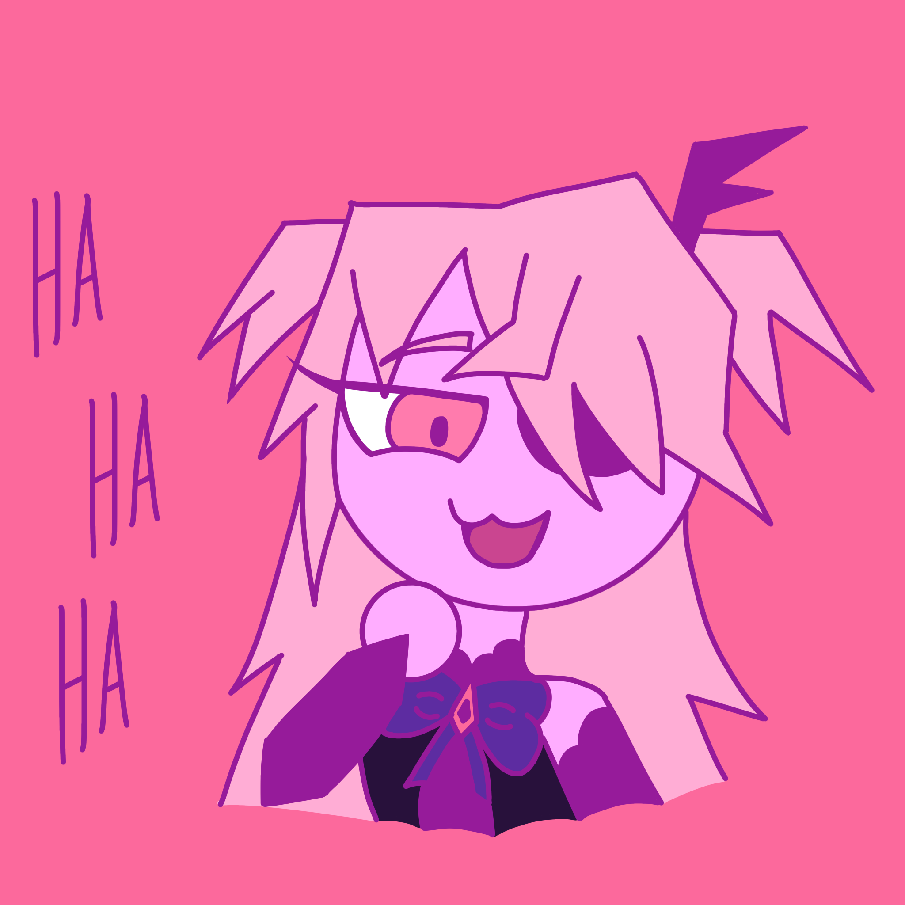

I started playing Genshin Impact just a few weeks after its release. I was intrigued by the open-world concept and the story. However, it took me an embarrassingly long time to fully grasp the game's mechanics during the first months of playing, so much so that I was severely under-leveled at a certain point. But after I learned how to play properly, I'm now on par with everyone else. The only drawback is that the game relies on a gacha system. Because of it, I typically only pull on the banners with the characters I really want. Luckily, it's rare that I don't end up getting the five-star characters I'm going for; sometimes, I even get two five stars in a row. The first four-star character I got (besides Noelle) was Fischl, and the first five-star character I got was Albedo.
 Home